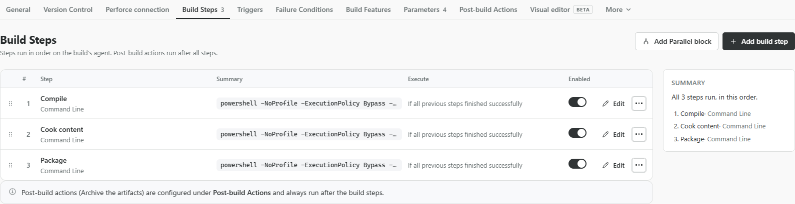

The steps list and the step editor
The Build Steps page lists what a build does, in order. Here you add, edit, switch off, copy, delete and reorder steps.
When to use it
Use this page whenever you change what a build configuration does: add a compile step, turn off a slow step for one test run, or move packaging after the tests. Steps run from top to bottom on the build's agent. Post-build actions, such as archiving files, run after all steps and have their own page.
How to set it up
- Open the build configuration and click Settings › Build Steps. The list shows each step with its name, its runner, its Step ID and, when set, how many conditions and retries it has.
- Click Add build step. The Add build step page opens with a tile for each runner. Type in Filter step types to narrow them. See Runners.
- Click a tile. The editor opens. Type a Step name, such as
Compile. Leave Step ID empty to have it made from the name. - Fill in the runner's fields, then the Execution section (when the step runs, conditions, retry). Click Save.
- Back in the list, drag a row by its handle to reorder it, or use Move up and Move down in its More actions menu.

The list
The line under the title says how many steps will run, for example 3 of 4 steps run, in this order; the others are disabled. Each row has:
- Enable and Disable: a switch. A disabled step stays in the list and shows Disabled. The build does not run it and the console says Disabled — not run.
- Edit: opens the step editor.
- More actions: Copy step, Move up, Move down and Delete step. Deleting asks first and cannot be undone.
- Tags such as Retry 2× and 1 condition when the step has them.
A Parallel block is one row with a tag such as Block · 2 sides. See Parallel blocks and Matrix mode. A step that comes from a project or a template shows where it came from, for example From project Game. See Steps shared from a project or template.
Every field in the step editor
| Field | What it does | Default | Example |
|---|---|---|---|
| Runner type | The kind of work. Change beside it picks another runner. | The tile you clicked | Command Line |
| Step name | The name shown in the list, on the build page and in the console. | The runner name | Compile shaders |
| Step ID | A short name. Start with a letter, then use lowercase letters, digits and _. It cannot change once the step exists. Later steps read the result in BUILD_STEP_STATUS_<ID>. See Step statuses. | Made from the name | compile_shaders |
| Enabled | Switch the step on or off. | On | Off while you test |
| (the runner's own fields) | See the page of each runner. | ||
| Execute step | When the step runs. See below. | If all previous steps finished successfully | Always, even if build stop command was issued |
| Conditions | The step runs only if all conditions are met. Each has a Parameter, an Operator and a Value. Parameters are build parameters and environment variables. | None | CONFIG equals Shipping |
| Retry on failure | How many extra tries a failed step gets, 0 to 10. | 0 | 2 |
| Wait between attempts | Seconds between tries. The agent keeps the workspace. | 0 | 30 |
| Only for exit codes | Retry only for these codes. Empty retries for any failure. | Empty | -1, 3221225477 |
| Outputs | Values the step sets for later steps. See Setting parameters from a build. | None | version (Text) |
| Run on | Run the step on another machine. See Parallel blocks and overrides. | Same machine as before | A pool or label: pool Consoles |
| Files sent back | When the step runs elsewhere, which changed files come back. | All changed files | Saved/Logs/** |
Execute step: when a step runs
By default a failed step stops the build and the steps after it are skipped. Execute step changes this for one step:
| Choice | Meaning |
|---|---|
| If all previous steps finished successfully | The default. The step runs only when nothing before it failed. |
| Only if build status is successful | Runs only while the build result is still successful. A step that made the build unstable stops it. |
| Even if some of the previous steps failed | Runs after a failure. Use it for a report step that must always run. |
| Always, even if build stop command was issued | Runs even when someone stopped the build. Use it for clean-up, such as shutting down a test server. |
| Only if build status is failed | Runs only after a failure. Use it to collect crash dumps or send alerts. |
Conditions are checked too. A step whose condition is not met is skipped, and the console says condition not met and shows the condition. The operators are: equals, does not equal, contains, does not contain, matches regex, exists, does not exist.
A worked example
The build configuration Game / Windows Build has four steps. The cook step must run only for a Shipping build, and a clean-up step must always run.
- Open Game › Windows Build › Settings › Build Steps.
- Edit Cook content. Under Conditions click Add condition. Pick the parameter
CONFIG, the operator equals and the valueShipping. Click Save. - Edit Stop test server. Set Execute step to Always, even if build stop command was issued. Click Save.
- Drag Stop test server to the end of the list.
What you see when it runs
The build page has a Build steps card. Each step shows succeeded, failed, unstable, stopped, skipped or disabled, with its time. A skipped step says why, for example Skipped: a previous step failed (execution policy: If all previous steps finished successfully). The console has one block per step, titled like [Step 2/4] Cook content (Command Line).
Problems and fixes
| Problem | What to do |
|---|---|
| Step IDs start with a letter and use only lowercase letters, digits and _ | Change the ID. Cook-Content is refused; cook_content is fine. |
| Another step already uses the ID … | Every step in a build configuration needs its own ID. |
| A step is skipped and you do not know why | Open the build. The Build steps card and the console give the reason next to the step. |
| A step from a project has no edit option | Use Override to change it for this build configuration only. See Steps shared from a project or template. |
| Not an exit code | Use whole numbers from -2147483648 to 4294967295, or 0x and hexadecimal digits. |